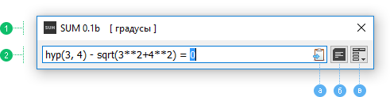

Главный интерфейс программы имеет два вида - Простой (по умолчанию) и с Историей. Переход между двумя видами можно осуществить с помощью кнопки История (изображения ниже - б) или комбинации клавиш Ctrl-H (History). Для открытия и закрытия Истории можно воспользоваться также комбинацией клавиш Ctrl-Вверх и Ctrl-Вниз, соответственно. Размеры главного окна можно легко изменить. В виде с Историей можно изменить также вертикальный размер окна.
В Поле Вычислений есть иконка показывающая состояние Автокопирования (изображения ниже - а). Автокопирование Включено, если иконка активна. Данное состояние можно изменить через главное Меню (изображения ниже - в) или комбинацией клавиш Ctrl-Shift-C (смотр. Клавишные комбинации). Это может быть полезно в тех случаях, когда в буфере обмена есть важная информация.
Индикатор в квадратных скобках, после заголовка главного окна, показывает текущую единицу углов для тригонометрических функций. Возможны два варианта - градусы (по умолчанию) и радианы.
SUM не может быть закрыта через кнопку-крестик Закрыть. Вместо этого она будет свернута в Трей (место рядом с часами в Windows). Вернуть программу всегда можно через иконку в Трее, но все же намного удобнее пользоваться Быстрой клавишей вызова (смотр. Настройки). Для автозапуска с системой есть опция Запустить в свернутом состоянии в Настройках. Выход программы доступен через главное Меню или комбинацию клавиш.
Чтобы Сбросить все настройки, а также размеры и расположение главного окна, воспользуйтесь соответствующей опцией в Настройках (состояние Истории, при этом, не измениться).

Простой вид - История закрыта, но доступна.

Вид с Историей - История открыта.
1. Заголовок окна - с индикатором единиц угла, 2. Поле Вычислений - состояние после завершения вычисления, 3. История - без выделенной записи.
а) Иконка Автокопирования - показывает состояние (Включено), б) Кнопка История - нажата в открытом состоянии, в) Кнопка Меню.
Поле Вычислений имеет постоянный фокус ввода, если главное окно активно. Это значит - любая комбинация клавиш повлияет также на Поле Вычислений. Данное поле имеет два неявных состояния - Свободное и Редактирования, и определяются они в основном вводом пользователя.
После того, как пользователь напечатал/удалил символ или отредактировал текст в Поле Вычислений, оно переходит в состояние Редактирования, и перемещение по Истории становится недоступным. В случае пустого поля ввода, а также после завершения вычисления, состояние Свободное, и История доступна с помощью клавиши Вверх.
Для Поля Вычисления по умолчанию доступны стандартные операции текстового поля, а также стандартное контекстное меню. В дополнение к ним, есть несколько пользовательских комбинаций клавиш.
Вверх - вверх (назад) по списку историй (перейти в Историю в Свободном состоянии),
Вниз - вниз (вперед) по списку историй,
Ctrl-C - копирование выражения текущей записи в Истории (если в Поле Вычисления есть выделение - будет скопирован выделенный фрагмент),
Ctrl-R - копирование результата текущей записи в Истории,
Ctrl-S - сохранение Истории (при выходе из программы сохраняется автоматически),
Del - удаление текущую запись в Истории (основная операция - удаление текста),
etc.
Смотр. все Клавишные комбинации.